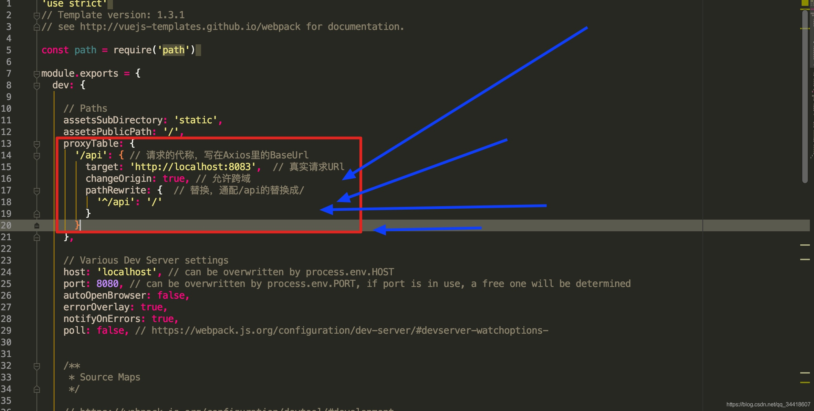

| 实例方法 | 说明 |
|---|---|
| this.$router.push(location, onComplete?, onAbort?) | 这个方法会向 history 栈添加一个新的记录，所以，当用户点击浏览器后退按钮时，则回到之前的 URL。并且点击 <router-link
:to="...">等同于调用 router.push(...)。 |
| this.$router.replace(location, onComplete?, onAbort?) | 这个方法不会向 history 添加新记录，而是跟它的方法名一样 —— 替换掉当前的 history 记录，所以，当用户点击浏览器后退按钮时，并不会回到之前的 URL。 |
| this.$router.go(n) | 这个方法的参数是一个整数，意思是在 history 记录中向前或者后退多少步，类似 window.history.go(n)。 |
参数传递方式： vue-router提供了params、query、meta三种页面间传递参数的方式。
在组件中使用：
this.$route.params
this.$route.query
this.$route.meta
(1)直接调用mounted事件不一定准确，props定义默认值，在data里面定义所有子组件的配置信息，封装一个子组件加载完成的函数，然后判断props里面的值是否和data里面的值相等。（如果子组件的数量较多时，会发生另外一种现象，子组件加载顺序会随机发生，如果要保证加载顺序与配置顺序一致，我们可以在子组件中加入order="1"属性）
// 由于Vue无法确定子元素的加载顺序，必须手动指定order
this.XXX.sort((a, b)=> a.order - b.order)
(2)通过watch监听
https://zhuanlan.zhihu.com/p/149680021 一知半解 没搞明白，继续努力
WebSocket、 SharedWorker ；（参考https://developer.mozilla.org/zh-CN/docs/Web/API/Web_Workers_API/Using_web_workers）
也可以调用localstorage、 cookies 等本地存储方式；
localstorage另一个浏览上下文里被添加、修改或删除时，它都会触发一个事件，
我们通过监听事件，控制它的值来进行页面信息通信；
注意quirks： Safari 在无痕模式下设置 localstorge 值时会抛出 QuotaExceededError 的异常；
config/index.js文件配置代理，找到proxyTable字段
删除数组
delete只是被删除的元素变成了 empty/undefined 其他的元素的键值还是不变。
Vue.delete 直接删除了数组 改变了数组的键值。
删除对象
两者相同，都会把键名（属性/字段）和键值删除。